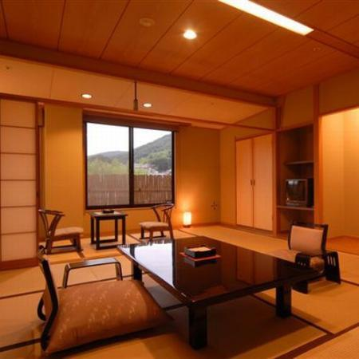
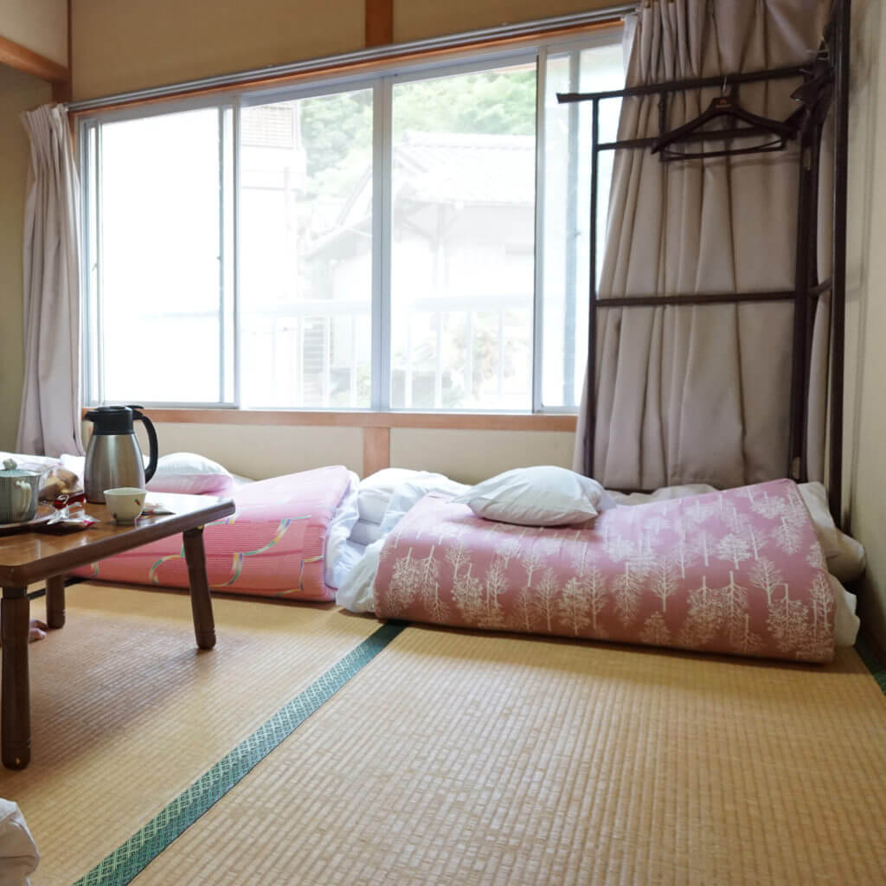
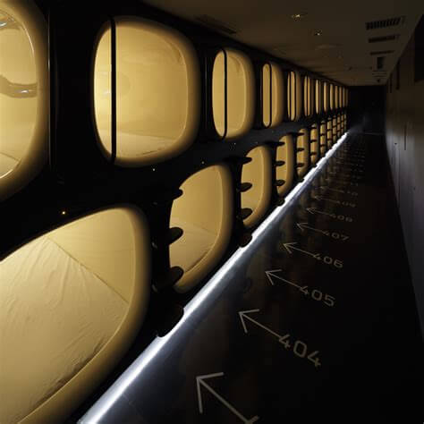
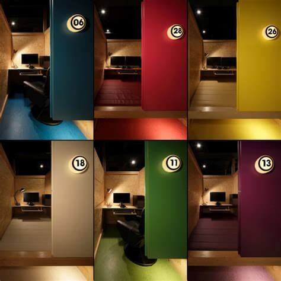

Where to Stay?
Japan offers a wide range of accommodation types in both Japanese and Western styles, including some unconventional forms such as capsule hotels and temple lodgings. Rates range from less than 2,000 yen per person in a dormitory to over 50,000 yen per person in a first class hotel or ryokan.
Below is a list of accommodation types with typical overnight rates:
Japanese Style
|

|
RyokanRyokan are traditional Japanese style inns with Japanese style rooms. A stay at a ryokan typically includes dinner and breakfast and is recommended to all travelers to Japan as it gives you the opportunity to experience a traditional Japanese lifestyle. 6,000 to 40,000 yen per person |
MinshukuMinshuku are Japanese style bed and breakfast lodgings. They are usually family run, offer Japanese style rooms, and often include one or two meals in the price. 4,000 to 10,000 yen per person |

|
Unique Lodgings
|

|
Capsule HotelsMainly targeting a male clientele in need of nothing but a bed, capsule hotels accommodate their guests in small capsules. A television, a shared bathroom and coin lockers are usually provided. 3,000 to 4,000 yen per person |
Manga CafesManga cafes are establishments that provide their customers with seats or booth to read manga (Japanese comics) and surf the internet. Many of them are open 24 hours and provide various amenities that make them an option for low-budget overnight stays. 1,500 to 3,000 yen per person |

|